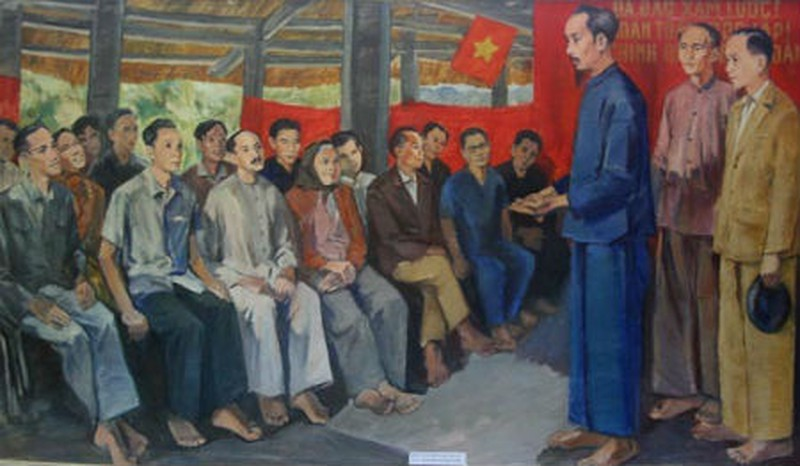
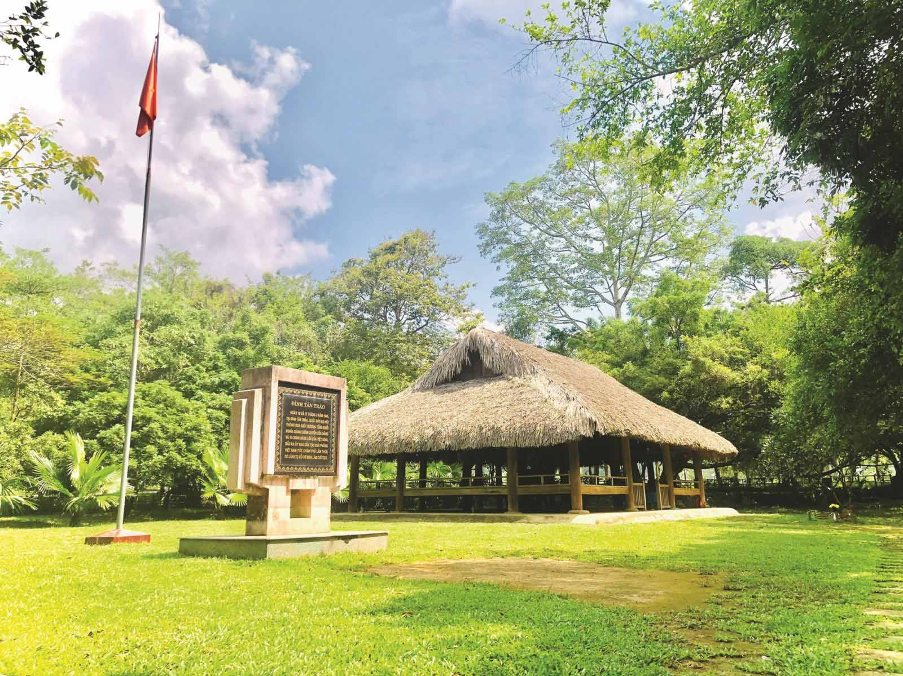
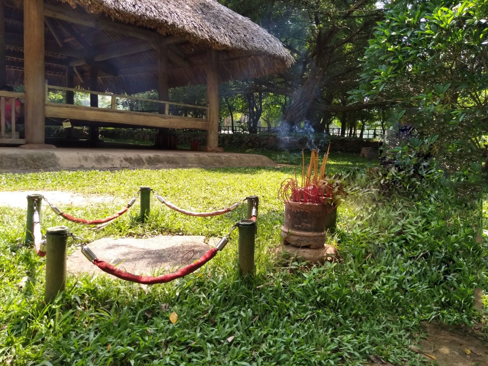

Đình Tân Trào là một đình nhỏ được xây dựng vào năm 1923 theo kiểu nhà sàn, cột gỗ, ba gian hai chái, mái lợp lá cọ, sàn lát ván, để đáp ứng nhu cầu tín ngưỡng và là nơi hội họp, sinh hoạt văn hoá của dân làng. Đình thờ 8 vị thành hoàng làng đại diện cho các thần sông, thần núi của làng Tân Lập, xã Tân Trào. Dưới mái đình này, ngày 16 tháng 8 năm 1945 đã họp Quốc dân Đại hội để quyết định lệnh tổng khởi nghĩa, 10 chính sách lớn quy định quốc kỳ, quốc ca và cử ra một chính phủ lâm thời. Vào ngày 20/3/1961, Hồ Chí Minh đã về thăm lại quê hương cách mạng Tân Trào.
Đình Tân Trào
Tại đây, các Đại biểu đã tán thành chủ trương tiến hành Tổng khởi nghĩa của Đảng, thông qua Lệnh khởi nghĩa và 10 chính sách lớn của Việt Minh, quy định quốc kỳ là lá cờ đỏ sao vàng, quốc ca là bài Tiến quân ca và cử ra Uỷ ban Giải phóng Dân tộc Việt Nam tức Chính phủ Lâm thời do đồng chí Hồ Chí Minh làm Chủ tịch. Sáng ngày 17 tháng 8 năm 1945 thay mặt Uỷ ban Dân tộc giải phóng Việt Nam, Bác Hồ đã đọc lời thề thiêng liêng trong lễ ra mắt Quốc dân tại nơi đây.

Quốc dân Đại hội Tân Trào
Ngày nay, đình Tân Trào là địa điểm du lịch Tuyên Quang nổi tiếng. Mỗi năm, nơi đây đón hàng trăm nghìn lượt khách đến tham quan và tìm hiểu về lịch sử cách mạng Việt Nam. Đình Tân Trào đã trở thành biểu tượng cho khát vọng độc lập tự do của dân tộc, gắn liền với những trang sử hào hùng của đất nước.

Quốc dân Đại hội Tân Trào
Di tích lịch sử đình Tân Trào Tuyên Quang được tu sửa vào năm Qúy Hợi 1923 theo kiểu kiến trúc nhà sàn miền núi, mái lợp lá cọ và xung quanh để trống. Đến nay, đình chỉ mới chỉ sửa lại phần mái, ba cột trụ bên ngoài và nâng cao nền để tránh nước mưa tràn vào. Kiến trúc chính của đình hầu như vẫn giữ nguyên vẹn từ năm 1923.
Trước cửa đình Tân Trào có một phiến đá phẳng, hình tròn, nằm ngay trên sân cỏ. Người dân địa phương coi đây là mâm thiêng, dùng để đặt đồ cúng tế các vị thần linh, thổ địa trước khi vào làm lễ trong đình. Dù chỉ là một chi tiết nhỏ, nhưng phiến đá này mang đậm nét văn hóa và tín ngưỡng của người dân. Bác Hồ rất tinh tế khi hiểu được ý nghĩa của nó. Vào ngày 17/8/1945, trong buổi ra mắt Quốc dân Đại hội, Bác cùng các đồng chí đã đứng bên phiến đá thiêng này để đọc lời tuyên thệ. Từ đó, người dân gọi phiến đá này là "phiến đá thề". Bên cạnh đó, một nét văn hóa khác của người Tày cũng được thể hiện rõ nét ở đình Tân Trào. Theo đó, ngay cửa đình có một hòn đá nhỏ được chôn nổi trên mặt đất. Hòn đá này mang ý nghĩa tương tự như ngưỡng cửa trong nhà người Kinh, nơi mọi người phải bước qua khi vào. Đối với nhà sàn của người Tày, hòn đá này thể hiện sự kính trọng đối với chủ nhà.
Ngoài ra, hòn đá còn mang ý nghĩa tâm linh. Người Tày không dùng đồng xu để xin âm dương như người Kinh, mà thay vào đó, họ tung hai cái thẻ trình lên hòn đá để xin âm dương. Hòn đá này thẳng hàng với bát hương của đình Tân Trào và còn được gọi là "hòn đá tâm" của đình.

Phiến đá thề phía trước sân đình
Đình Tân Trào Tuyên Quang là di tích lịch sử quan trọng, thu hút đông đảo du khách trong và ngoài nước đến tham quan. Đây là địa điểm du lịch hấp dẫn và là nơi mọi người có thể tìm hiểu về truyền thống, lịch sử cách mạng Việt Nam, từ đó góp phần giáo dục lòng yêu nước cho các thế hệ.

Đình Hồng Thái
|

Lán Nà Nưa
|

Lán Hang Bòng
|

Flaminggo Tân Trào
|

Cây đa Tân Trào
|

Đình Tân Trào
|
© 2021 Khu di tích lịch sử Tân Trào
Địa chỉ: Tân Trào, Sơn Dương, Tuyên Quang
Điện thoại:liên hệ gr 4